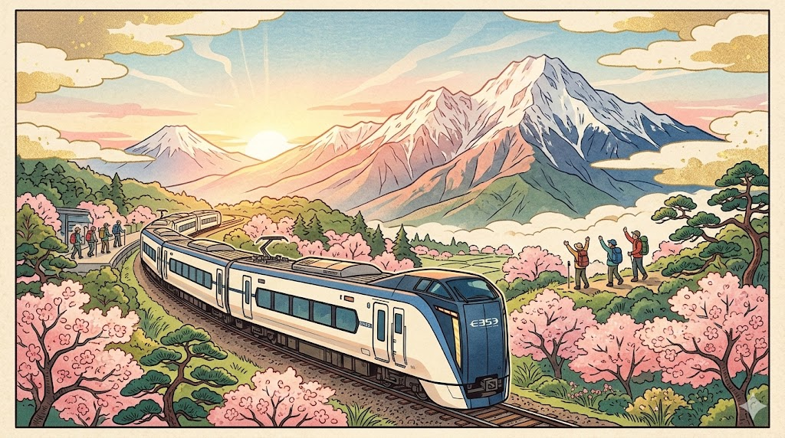

I went to the woods because I wished to live deliberately,
to front only the essential facts of life,
and see if I could not learn what it had to teach.

余談ながら、筆者はこの令和八年三月の静寂なデスクの前で、ある種の「身体的渇望」を感じている。私たちの日常は、マルチモーダルAIのパーソナルアシスタントによって、移動からタスク管理まで完璧に最適化された。しかし、最適化されればされるほど、私たちは「予測不能な風」や「自らの筋肉が悲鳴を上げる感覚」を求めて、新宿駅のホームへと吸い寄せられていく。
土曜の朝7時、新宿駅。ホームに滑り込む「特急あずさ1号」は、2026年の今も変わらず、都市と野生を繋ぐ聖域だ。トレッキングシューズの硬い足音、大型バックパックの擦れる音。素材テキストが「登山者専用列車」と評するその光景は、利便性の極致に生きる私たちが、野生を取り戻すための儀式のようにすら見える。
一、構造的優位：新宿から雲上へ直結する「黄金のライン」
特急あずさがカバーするエリアは、初心者からベテランまでを包み込む懐の深さがある。新宿から2〜3時間、そこにはAIの生成画像では決して再現できない「空気の質感」が広がっている。
「茅野駅で一斉に降りてバスに殺到するあの瞬間、登山者たちの間に不思議な連帯感が生まれる。それは、同じ高みを目指す者だけが共有する、2026年のプリミティブな熱量だ」
素材から読み解く、2026年現在の主要アクセス・マトリクスを整理しよう。
🏔️ 2026年版：あずさ登山アクセス・ガイド
- 北八ヶ岳（茅野駅）：麦草峠や渋の湯へ。AIによる高精度な「マイクロウェザー予測」により、日帰りの稜線歩きがより安全・快適に。
- 南八ヶ岳（茅野駅）：赤岳・硫黄岳への挑戦。美濃戸口へのバス乗り継ぎは今も登山の王道だ。
- 入笠山（富士見駅）：ゴンドラを利用した「イージー・クライミング」の聖地。下山後の日帰り温泉までがセットになった、タイパを超越した贅沢。
- 大菩薩嶺（甲斐大和駅）：特急あずさや、かいじを駆使してアクセス。富士山を正面に望む稜線は、SNSのタイムラインを飾る最高の一枚を約束してくれる。
二、梓川のせせらぎと、AIが踏み込めない「余白」
特に象徴的なのは、松本駅から新島々を経由して辿り着く「上高地」だろう。2026年、上高地の一部区間では、自然保護を目的とした自動運転シャトルが静かに走行している。しかし、河童橋から大正池へと続く梓川沿いの遊歩道に、デジタルな介入はない。
初心者が梓川の透き通った水に手を浸し、穂高連峰の威容を見上げる。その瞬間に脳内を駆け巡る感覚は、どんなVRデバイスも、どんな大規模言語モデルも言語化し得ない「個人の真実」だ。素材が示す「登山者率の異常な高さ」は、効率化された社会において、あえて不自由な山道を歩くことが、最大の贅沢になったことを物語っている。
💡 ファクトチェック
E353系の進化：全席にコンセントを完備し、Wi-Fi環境も安定。登山届のオンライン提出や、山の最新コンディションを移動中にチェックすることが完全に定着している。
JR東日本：特急あずさ・かいじ（公式）
信州の山岳観光：2026年、環境省と自治体は、オーバーツーリズム対策と満足度向上のため、バスのリアルタイム混雑状況をAIで配信中。
アルピコ交通：上高地・信州アクセス（公式）
2026年の私たちは、あらゆる答えを数秒で手に入れることができる。しかし、「あずさ」に乗って向かう標高2000メートルの世界には、自分の足で歩かなければ辿り着けない答えが、今も静かに眠っている。
新宿発、午前7時。その列車のドアが開くとき、あなたは昨日までの自分を脱ぎ捨て、もっと自由な、もっと人間らしい自分に出会うことになるだろう。
さて、次の週末。あなたはどの「あずさ」に乗り、どの山で風の声を聴きますか？ その計画を立てる時間こそが、旅の最初の、そして最高の1ページです。
🛒 おすすめ関連商品

¥5,980

¥3,852

¥6,640
📚 参考・関連記事
- あずさ (列車) - Wikipedia — 記事の主役である特急「あずさ」の歴史や運行系統、使用車両（E353系）に関する基礎知識を確認できます。
- 信州 山のグレーディング - 長野県庁 — 記事で紹介された八ヶ岳や上高地周辺の登山ルートの難易度を、長野県公式のデータで客観的に把握できます。
- 上高地公式ウェブサイト — 2026年の記事でも触れられている上高地の自然保護活動やアクセス、最新の散策情報を知るための第一情報源です。